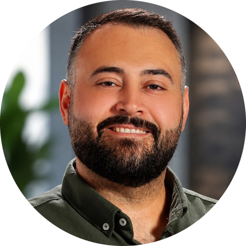

Hi, I'm Hazem. I'm a UI/UX lead who builds design systems for multiple brands, themes and languages (LTR and RTL).
I'm based in Amman. For the past four years I've worked on government and fintech products in Saudi Arabia and Jordan, building the shared colours, type, components and rules that let many teams ship work that looks and behaves the same.
Before UX, I spent twelve years in 3D animation, TV graphics, web design and art direction. I still care a lot about how things look. These days I care just as much about whether a team can keep them looking that way.

Selected work
Giving a family of government products one fingerprint
The client's products looked like they came from different companies. I led four designers to build one design system for all of them, and restarted it after a seven-month pause.
One design system, any brand
Change a few settings and the same components become a different brand, in dark mode, in Arabic. I built it alone, with a Figma AI agent doing the production work.
LUSTER: one token layer, three brands
A course project built by a team of seven. It's where I learned the token architecture I later used on my own. My part: planning and mind-mapping tokens so every component followed one naming structure.

AOUNAK: booking a truck to move furniture, in five steps
A startup I co-founded and designed from the first interview to the final screen. We never launched, and the case study explains why.

How I got here
I learned design at a printing press while I was still at university. The owner caught me sketching and offered me two hours a day to train as a graphic designer. I took it.
After graduating in computer graphics and animation from Princess Sumaya University for Technology in 2011, I worked as a 3D animator, ran on-air graphics at Roya TV, designed websites for years, and became an art director.
As an art director I led a creative team across five client brands at once: presentations, social media, websites and mobile app screens. That was my first product work, done on instinct rather than method. In 2022 a UX bootcamp gave me the method, and I made the switch properly.
Since then I've designed the Al Rajhi Capital super app at Ejada, led a design system team at Synechron in Riyadh, and built design systems and design direction at Deloitte.
What I'm good at: design systems that developers can build from directly, Arabic and RTL handled properly from the start rather than mirrored at the end, and careful, clean UI.
What I'm getting better at: research. Most of my client projects didn't include user testing, so I make room for it wherever I can, like I did on AOUNAK.
- UI/UX Delivery ManagerDeloitte
- UI/UX LeadSynechron, Riyadh
- Senior UI/UX DesignerEjada Systems
- Art DirectorSmart Business Network
- Web designer, graphic designer and 3D animatorBefore 2019
- B.A. Computer Graphics and AnimationPrincess Sumaya University for Technology
- Full resume (PDF) →
- Portfolio deck (PDF) →
Say hello
I'm open to UI/UX lead and design system roles, on-site, hybrid or remote, and I'm happy to relocate. If you're building a product in more than one language or for more than one brand, I'd love to hear about it.